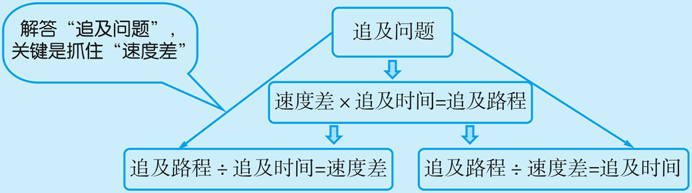
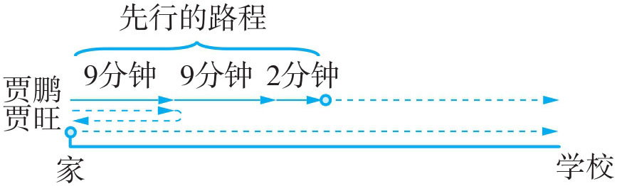
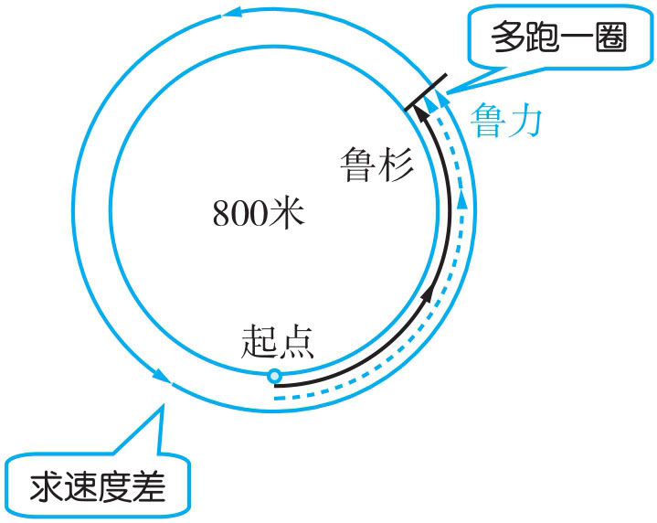
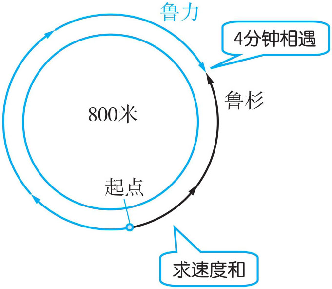
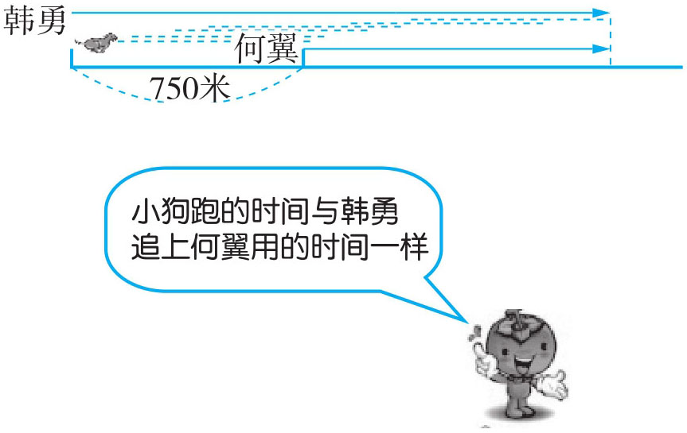
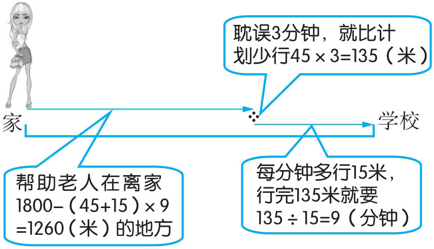
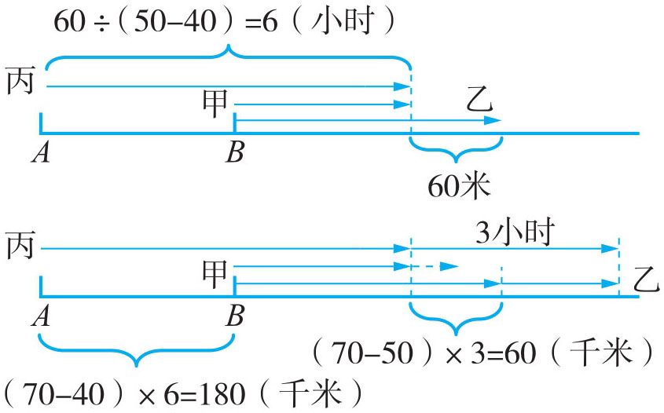

我们研究的追及问题主要是同向追及问题。同向追及问题的特征是两个运动物体同时不同地（或同地不同时）出发做同向运动。后面的行进速度要快于前面的行进速度，在一定时间之内，后面的追上前面的物体。基本关系如下：

例1 贾鹏、贾旺两兄弟都以每分钟60米的速度结伴从家出发到学校，走9分钟后贾旺因忘记带作业本返回家，贾鹏继续前进。贾旺在家耽误了2分钟，然后以每分钟100米的速度去追贾鹏，贾旺需多少分钟才能追上贾鹏？
两人走了9分钟后贾旺返回家，贾鹏继续前行。由此可知，贾旺返回家时，贾鹏已经行了9+9=18（分钟），贾旺在家耽误了2分钟，这时贾鹏就比贾旺多走了18+2=20（分钟），也就多走了60×20=1200（米）。贾旺要追上贾鹏就必须追及1200米，他每分钟比贾鹏快100-60=40（米）。所以他要1200÷40=30（分钟）才能追上贾鹏。

(9×2+2)×60÷(100-60)=1200÷40=30（分钟）
答：贾旺需30分钟才能追上贾鹏。
例2 鲁力与鲁杉在一个周长为800米的湖边晨跑，她们从同一地点出发。若同向而行，鲁力20分钟能追上鲁杉；若背向而行，鲁力4分钟与鲁杉相遇。问：鲁杉围绕湖边跑一圈要多长时间？
同向而行，鲁力20分钟追上鲁杉，由此可知，鲁力20分钟刚好比鲁杉多跑一圈，也即是800米，每分钟就比鲁杉多跑（速度差）800÷20=40（米／分钟）。又从她们背向而行鲁力4分钟与鲁杉相遇，可知，她们的速度和为800÷4=200（米／分钟）。通过速度差与速度和，可求出鲁杉每分钟跑(200-40)÷2=80（米），她跑一圈的时间为800÷80=10（分钟）。

鲁杉每分钟跑的米数：(200-800÷20)÷2=80（米）
鲁杉跑一圈所用时间：800÷80=10（分钟）
答：鲁杉跑一圈要10分钟。

例3 韩勇与何翼相距750米，何翼在前，韩勇在后，他们同时同向而行，中间有一条小狗来回跑动，碰到韩勇立刻返回跑向何翼，如此反复不停地跑动。已知韩勇每分钟走60米，何翼每分钟走35米，小狗每分钟跑70米。求韩勇追上何翼时小狗跑了多少米？
小狗跑动的时间与两人行走的时间是一致的，从两人开始走到韩勇追上何翼为止，小狗一直在来回跑动。因此，求小狗跑的路程，只要知道韩勇追上何翼的时间与小狗的速度就能计算。

750÷(60-35)×70=750÷25×70=30×70=2100（米）
答：韩勇追上何翼时小狗跑了2100米。
例4 杨晓芬从家到学校，要行1800米，若以每分钟45米的速度则刚好赶上上课。某天，她在去学校途中帮助一位老大爷过马路耽误了3分钟，为了赶上上课，她必须在后面每分钟多行15米。问：她是在离家多远处帮助的老大爷？
途中耽误3分钟，也就是少行45×3=135（米）。少行的135米必须在后面每分钟多行15米将它走完，因此，后面用了135÷15=9（分钟）。后面共走的路程就为(45+15)×9=540（米），则帮助大爷是在离家1800-540=1260（米）的地方。

1800-45×3÷15×(45+15)=1800-9×60=1800-540=1260（米）
答：杨晓芬是在离家1260米的地方帮助的老大爷。
例5 有甲、乙、丙三辆小车，它们的速度分别是每小时40千米、50千米、70千米。甲、乙两车在B 地同时同向出发，丙车从A 地同时同向出发去追赶甲、乙两车。丙车追上甲以后又过了3小时才追上乙。求A 、B 两地的距离。
丙追上甲后3小时才追上乙，可推出这时丙比乙多行(70-50)×3=60（千米）。也就是丙追上甲时乙比甲多行60千米，由此可知，丙车追上甲时它们都行了60÷(50-40)=6（小时）。A 、B 两地的距离为(70-40)×6=180（千米）。

丙追上甲时乙比甲多行的路程：(70-50)×3=60（千米）
丙追上甲时他们都用的时间：60÷(50-40)=6（小时）
A 、B 两地相距的路程：(70-40)×6=180（千米）
答：A 、B 两地相距180千米。
1．张斌、张琴两家相距120米，他们同时出发，沿同一方向到新华书店去买书。张琴在前，每分钟行80米；张斌在后，每分钟行100米。几分钟后张斌能追上张琴？
2．客车每小时行60千米，小轿车每小时行80千米，两车同时从相距50千米的两地同方向开出，客车在前，小轿车在后。问：客车到达180千米的终点前，小轿车能否追上它？
3．甲、乙两人在600米的环形跑道上散步。他们从同一地点出发，若同向而行，甲20分钟后追上乙；若背向而行，甲5分钟后与乙相遇。问：乙跑完一圈要多少分钟？
4．李俊家离学校有3千米，她每天骑车以每分钟200米的速度去上课，正好准时到达学校。一天，李俊在途中遇到熟人耽误3分钟，为了准时到校，她必须在后面每分钟多行100米。问：她是在离家多远的地方遇到的熟人？
5．简玮、贾伟两人骑车从学校去动物园。简玮以10千米／时的速度先行30分钟后，贾伟以12.5千米／时的速度去追，结果在离公园1千米处追上简玮。学校和动物园相距多少千米？
6．吴癸宏早晨上学，每分钟步行60米正好准时到校。有一天途中帮助一位老奶奶捡散落的水果用了5分钟，他怕迟到，在剩下的路程中他加快脚步，每分钟走90米，也正好准时到校。吴癸宏在离学校多远的地方帮助的老奶奶？
7．小红、小明、小李三人步行的速度分别为40米／分、60米／分、70米／分。星期天，小红、小明两人从图书馆出发，小李从公园出发，他们同时相向而行，小李遇到小明后2分钟又遇到小红，图书馆与公园相距多少米？
8．甲、乙、丙三人都从华山脚下步行到华山顶。早上7时甲、乙两人同时从华山脚下出发，甲每小时走3千米，乙每小时走2千米。丙上午9时才从华山脚下出发。下午3时，甲、丙同时到达华山顶。问：丙是什么时候追上乙的？
9．甲、乙两地相距2340米，明明、天天两人从甲地出发，亮亮同时从乙地出发与明明、天天两人相向而行。已知明明、天天、亮亮三人的速度分别是每分钟60米、80米和100米。当亮亮和天天相遇时，明明落后于天天多少米？